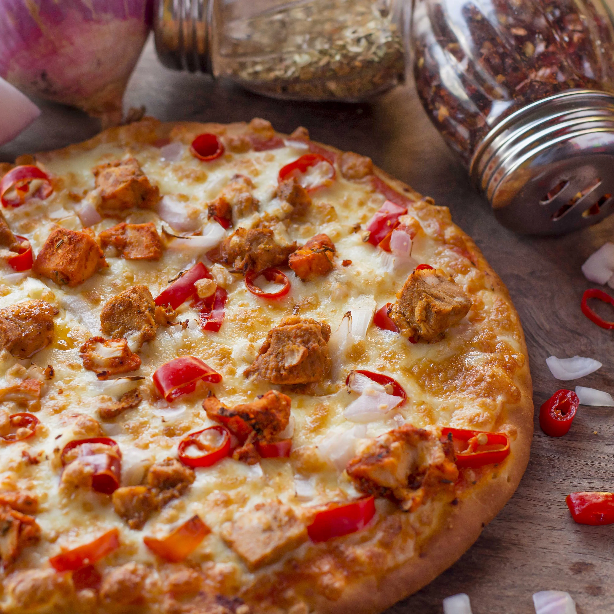
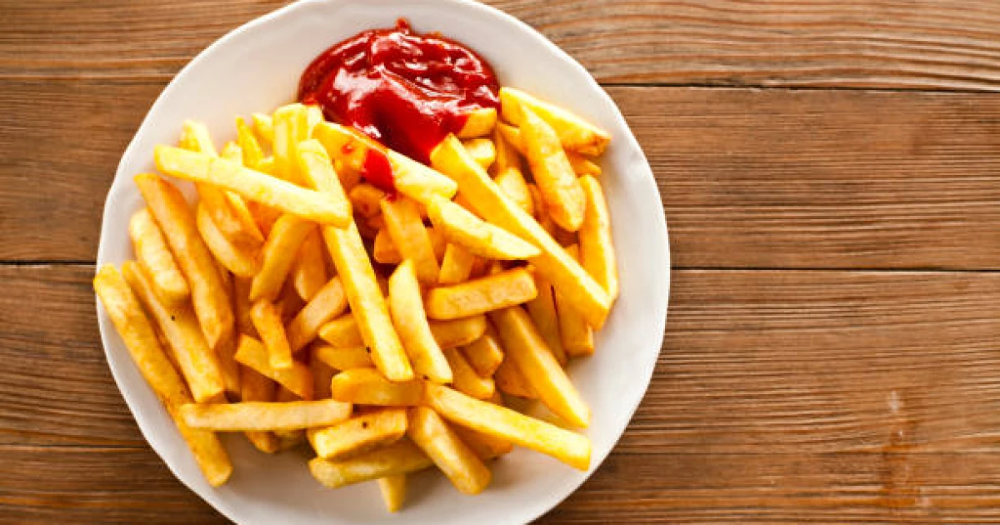
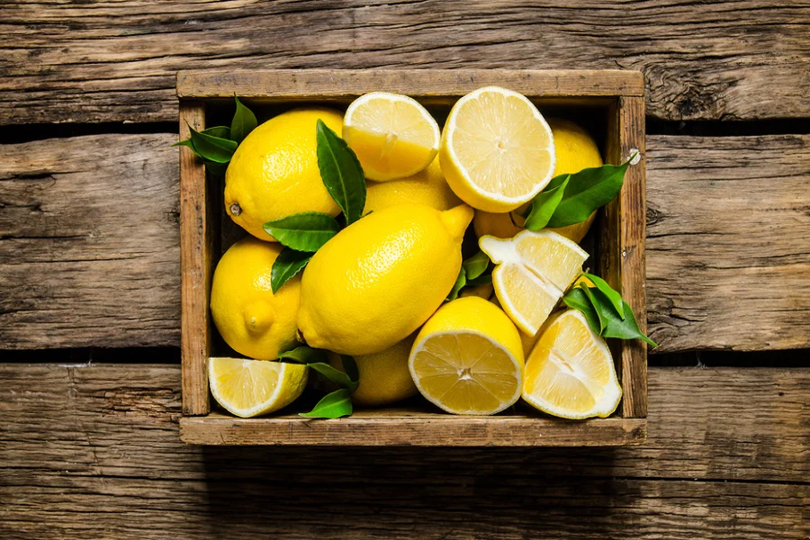

Pizza
- Most Apetizing & Harmful Food
- We Should Avoid This

Burger
- Most Apetizing & Harmful Food
- We Should Avoid This

Hot Chips
- Most Apetizing & Harmful Food
- We Should Avoid This

Milk
- Most Importent Food For Our Health
- We Should Get This

Sour fruits
- Most Importent Food For Our Health
- We Should Get This
Fresh Juice
- Most Importent Food For Our Health
- We Should Get This